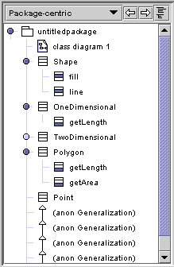

|  | Argo's Navigation Pane shows you the contents of your design. This element of Argo's
UI should be familiar to anyone who has used the Microsoft Windows Explorer or any one of a number of commercial
CASE tools. Single clicking on an object in the naviagation pane selects the object in the main editor pane and
shows the details of that object in the details pane. Double clicking on an object in the navigation pane will
change the object shown in the main editing pane. Unlike the navigation panes found in many other tools, Argo provides multiple navigational perspectives. The choice menu at the top of the navigation pane sets the current perspective. Each perspective shows a hierarchical view of the design that emphasizes certain aspects and hides others. For example, one perspective makes inheritance relationships very clear, while another perspective emphasizes transitions between states. Several navigational perspectives are provided with ArgoUML, and you can customize and define new perspectives using the Navigational Perspective Configuration Window. Normally, you will double click to change diagrams, and you will single click to edit the properties of other objects. |